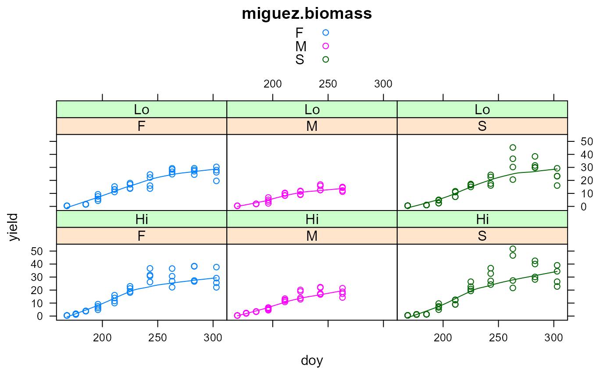

miguez.biomass.RdBiomass of 3 crops in Greece
data("miguez.biomass")
A data frame with 212 observations on the following 5 variables.
doyday of year
blockblock, 1-4
inputmanagement input, Lo/Hi
cropcrop type
yieldyield tons/ha
Experiment was conducted in Greece in 2009. Yield values are destructive Measurements of above-ground biomass for fiber sorghum, maize, sweet sorghum.
Hi management refers to weekly irrigation and high nitrogen applications. Lo management refers to bi-weekly irrigation and low nitrogen.
The experiment had 4 blocks.
Crops were planted on DOY 141 with 0 yield.
Fernando E. Miguez. R package nlraa. https://github.com/femiguez/nlraa
Sotirios V. Archontoulis and Fernando E. Miguez (2013). Nonlinear Regression Models and Applications in Agricultural Research. Agron. Journal, 105:1-13. https://doi.org/10.2134/agronj2012.0506
Hamze Dokoohaki. https://www.rpubs.com/Para2x/100378 https://rstudio-pubs-static.s3.amazonaws.com/100440_26eb9108524c4cc99071b0db8e648e7d.html
# \dontrun{ library(agridat) data(miguez.biomass) dat <- miguez.biomass dat <- subset(dat, doy > 141) libs(lattice) xyplot(yield ~ doy | crop*input, data = dat, main="miguez.biomass", groups = crop, type=c('p','smooth'), auto.key=TRUE)# ---------- # Archontoulis et al fit some nonlinear models. # Here is a simple example which does NOT account for crop/input # Slow, so dont run if(0){ dat2 <- transform(dat, eu = paste(block, input, crop)) dat2 <- groupedData(yield ~ doy | eu, data = dat2) fit.lis <- nlsList(yield ~ SSfpl(doy, A, B, xmid, scal), data = dat2, control=nls.control(maxiter=100)) print(plot(intervals(fit.lis))) libs(nlme) # use all data to get initial values inits <- getInitial(yield ~ SSfpl(doy, A, B, xmid, scal), data = dat2) inits xvals <- 150:325 y1 <- with(as.list(inits), SSfpl(xvals, A, B, xmid, scal)) plot(yield ~ doy, dat2) lines(xvals,y1) # must have groupedData object to use augPred dat2 <- groupedData(yield ~ doy|eu, data=dat2) plot(dat2) # without 'random', all effects are included in 'random' m1 <- nlme(yield ~ SSfpl(doy, A, B, xmid,scale), data= dat2, fixed= A + B + xmid + scale ~ 1, # random = B ~ 1|eu, # to make only B random random = A + B + xmid + scale ~ 1|eu, start=inits) fixef(m1) summary(m1) plot(augPred(m1, level=0:1), main="miguez.biomass - observed/predicted data") # only works with groupedData object } # }